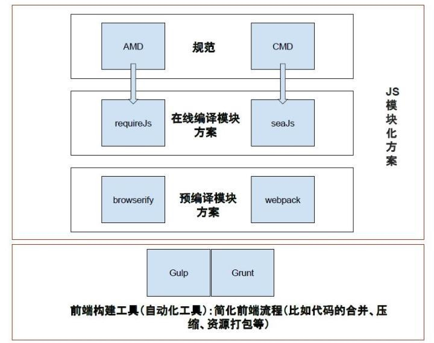

前言
起因
随着Web开发日渐复杂化和多元化，早已不是以前写几个页面布局加上点样式，再搞几个jQuery插件就能OK的了。前端做的事情越来越多，那么为了解放我们的生产力，提高团队的写作效率，我们就迫切需要一些工具来帮我们完成一些事情：
内因
- 代码转换：有时我们会采用一些高效的语言，不会直接书写HTML\CSS\JS，但是这些语言浏览器原生不支持，就需要工具将其进行转换；
- 文件优化：为了减少文件大小、服务器请求，我们需要工具对代码进行压缩、图片合并等；
- 代码审查：在团队协作中，特别是大项目，为了避免不必要的错误，减少维护成本，我们需要统一我们的代码风格；
- 模块合并与分割：现在大部分采用模块化的开发，我们需要工具能够分析我们模块的依赖关系，对其进行合理的分割和合并。
- 愉快的开发环境：在开发的时候，我们希望最大程度的解放我们的双手，把那些重复机械的工作交给工具去做，比如自动刷新、自动打包发布等
外因
得益于nodejs的快速发展，让js有了更大的能力：
- 跳出了浏览器的沙盒，能够在命令行中使用
- 能够操作本地文件
这两点是作为一个构建工具的必要条件。
发展史
- Grunt：前端自动化小工具，基于任务的命令行构建工具；
- Gulp：和Grunt一样，也是基于Nodejs的自动任务运行器，但是采用流的方式，利用管道思路，前一节点的输出作为下一节点的输入，最后一步才输出文件到磁盘，大大提高了构建时间和性能。
- webpack：模块化管理和打包工具，将许多松散的模块按照依赖和规则打包成符合生产环境部署的前端资源。还可以将按需加载的模块进行代码分隔，等到实际需要的时候再异步加载，和前面的两个有明显的区别。
- 当然这其中也有其他的一些工具的出现，比如：Rollup（和 Webpack 很类似但专注于 ES6 的模块打包工具，但生态不如webpack），Fis3（来自百度的优秀国产构建工具，功能非常强大，但是官方已经不再维护），yeoman（脚手架自动生成工具，提供了很多项目模板），Bower（包），browserify（打包工具）
- 最近也有一匹黑马出现-Parcel，利用缓存提升性能与速度，零配置。待生态完善后有可能超越webpack。
对比
这张图很清楚的对比了几种主流的构建工具。

（图片来自网络）
Gulp
简介
用自动化构建工具增强你的工作流程！
官网：地址
中文网：地址
基于Nodejs的自动任务运行器，采用流的方式，借鉴了Unix操作系统的管道（pipe）思想，仅在最后一步才输出文件到磁盘，快速高效。
官方仅提供5个API（4.0又增加了几个），利用这5个API我们可以完成测试、检查、合并、压缩、格式化、自动刷新、部署、监听等任务。而且因为只有5个API，上手也是特别简单。
官方API
如下api均是3.0版本，如需查看4.0版本文档，请移驾Gulp4.0入门指南
gulp.src(globs[, options])
匹配需要处理的源文件
globs：源文件匹配路径
可以使用的模式:
“src/a.js”：//指定具体文件；
“*”：//匹配所有文件 例：src/*.js(包含src下的所有js文件)；
“**”：//匹配0个或多个子文件夹 例：src/**/*.js(包含src的0个或多个子文件夹下的js文件)；
“{}”：//匹配多个属性 例：src/{a,b}.js(包含a.js和b.js文件) src/*.{jpg,png,gif}(src下的所有jpg/png/gif文件)；
“!”：//排除文件 例：!src/a.js(不包含src下的a.js文件)；
// 例
gulp.src(['style/**/*.scss','!style/{extend,page}/*.scss'])
options[Object]：有3个属性buffer、read、base
options.buffer： 类型：Boolean 默认：true 设置为false，将返回file.content的流并且不缓冲文件，处理大文件时非常有用；
options.read： 类型：Boolean 默认：true 设置false，将不执行读取文件操作，返回null；
options.base： 类型：String 设置输出路径以某个路径的某个组成部分为基础向后拼接
gulp.dest(path[, options])
任务完成后文件输出的路径
- path: 文件将被写入的路径（输出目录）,也可以传入一个函数，在函数中返回相应路径;
options[Object]: 有两个属性
options.cwd： 类型：String 默认：process.cwd()：输出目录的 cwd 参数，只在所给的输出目录是相对路径时候有效；
options.mode： 类型：String 默认：0777 八进制权限字符，用以定义所有在输出目录中所创建的目录的权限；
// 例
.pipe(gulp.dest('./build/minified_templates'));
gulp.task(name[, deps], fn)
定义一个任务
- name：任务的名字，不能使用空格
- deps：前置任务，一个包含任务列表的数组，这些任务会在你当前任务运行之前完成（记得使用正确的异步执行方式：使用cb或者返回stream或promise ）。
//callback
// 在 shell 中执行一个命令
var exec = require('child_process').exec;
gulp.task('jekyll', function(cb) {
// 编译 Jekyll
exec('jekyll build', function(err) {
if (err) return cb(err); // 返回 error
cb(); // 完成 task
});
});
//返回stream
gulp.task('somename', function() {
var stream = gulp.src('client/**/*.js')
.pipe(minify())
.pipe(gulp.dest('build'));
return stream;
});
//返回promise
var Q = require('q');
gulp.task('somename', function() {
var deferred = Q.defer();
// 执行异步的操作
setTimeout(function() {
deferred.resolve();
}, 1);
return deferred.promise;
});
- fn：定义任务所要执行的一些操作。
gulp.watch(glob [, opts], tasks) 或 gulp.watch(glob [, opts, cb])
监视文件，并且可以在文件发生改动时候执行指定任务
- glob：要监听的文件入口，可以是一个也可以是多个（数组表示）
- tasks：文件改变要执行的任务的名称数组
- cb：文件改变要执行的回调函数
gulp.task('watch1', function () {
gulp.watch('less/**/*.less', ['testLess']);
});
gulp.task('watch2', function () {
gulp.watch('js/**/*.js', function (event) {
console.log('File ' + event.path + ' was ' + event.type + ', running tasks...');
});
});
gulp.start(taskName1,taskName2,...)
执行指定任务
- taskName：任务名称
开始使用
一、安装
- 全局安装
npm install --global gulp
- 项目依赖安装
npm install --save-dev gulp
二、创建配置文件
在文件根目录创建一个名为gulpfile.js的文件。
var gulp = require('gulp');
gulp.task('default', function() {
// 将你的默认的任务代码放在这
});
三、新建任务
根据自己需要，安装插件并且配置相应的任务。
以下通过几个案例来学习：
清除文件（del）
var gulp = require('gulp'),
del = require('del');
gulp.task('clear', function (cb) {
del(['static/css', 'static/html', 'static/js', 'static/picture', 'static/skin', 'tour.xml'], cb);
});
Less编译及压缩（gulp-less、gulp-clean-css）
var gulp = require('gulp'),
less = require('gulp-less'),
cleanCSS = require('gulp-clean-css');
gulp.task('runLess', function () {
gulp.src('src/less/*.less')
.pipe(less())
.pipe(cleanCSS({
compatibility: 'ie8', //兼容
keepSpecialComments: '*' //是否保留前缀
}))
.pipe(gulp.dest('src/css'));
});
图片压缩(gulp-imagemin,gulp-changed)
var gulp = require('gulp'),
changed = require('gulp-changed'),
imagemin = require('gulp-imagemin');
gulp.task('picmin', function () {
return gulp.src('./dev/static/picture/**/*.{jpg,jpeg,png,gif,ico,JPG}')
.pipe(changed('./static/picture')) //缓存起来，只有图片变动时才压缩，提高效率
.pipe(imagemin({
optimizationLevel: 5, //类型：Number 默认：3 取值范围：0-7（优化等级）
progressive: true, //类型：Boolean 默认：false 无损压缩jpg图片
interlaced: true, //类型：Boolean 默认：false 隔行扫描gif进行渲染
}))
.pipe(gulp.dest('./static/picture'));
});
启动本地服务器（browserSync）
var gulp = require('gulp'),
browserSync = require('browser-sync').create();
gulp.task('server', function () {
browserSync.init({
server: {
baseDir: './', // 在 dist 目录下启动本地服务器环境，自动启动默认浏览器
proxy: '10.6.63.234'
}
});
});
默认任务
可以定一个名为default的task，这个task就是默认的任务（直接运行gulp即可），可以在这里运行其他的任务，个人习惯把整套构建流程都放在这里调用。
插件可以在网上搜索或者在npm官网查找，一般以gulp开头，每个插件的配置有所不同，可以在插件介绍页查看，就不一一介绍了。
四、运行任务
在命令行中运行任务
gulp taskName //运行指定名字的task
gulp //运行默认任务
可以在package.json的scripts中配置常用操作，然后通过npm run 方式调用
常用技巧
参见：地址
配合webpack
参见：地址
Webpack
什么是Webpack
现代 JavaScript 应用程序的静态模块打包器(module bundler)，它能够根据模块的依赖关系进行静态分析，然后将这些模块按照指定的规则生成对应的静态资源；本身只支持javascript，通过loader可以支持其他资源，每个资源即一个模块，在webpack中一切皆模块；通过plugins的扩展，拥有强大的功能。已经成为目前最流行，社区最活跃的打包工具。
官网：地址
为什要使用Webpack
近年来 Web 应用变得更加复杂与庞大，Web 前端技术的应用范围也更加广泛，为了方便维护和管理，需要用模块化的思想来组织代码，产生了一些需求：
- 将依赖树拆分成按需加载的块
- 初始化加载的耗时尽量少
- 各种静态资源都可以视作模块
- 将第三方库整合成模块的能力
- 可以自定义打包逻辑的能力
- 适合大项目，无论是单页还是多页的 Web 应用
模块化
传统方式<script>
缺点很明显：
- 全局作用域下容易造成变量冲突，如jq和zepto
- 文件只能按照
<script>的书写顺序进行加载 - 开发人员必须主观解决模块和代码库的依赖关系
- 在大型项目中各种资源难以管理，长期积累的问题导致代码库混乱不堪
AMD
与 CommonJS 最大的不同在于它采用异步的方式去加载依赖的模块。 AMD 规范主要是为了解决针对浏览器环境的模块化问题，最具代表性的实现是 requirejs。
缺点在于JavaScript 运行环境没有原生支持 AMD，需要先导入实现了 AMD 的库后才能正常使用。
CMD
规范和 AMD 很相似，推崇就近依赖，只有在用到某个模块的时候再去require，国产，代表SeaJS
缺点依赖 SPM 打包，模块的加载逻辑偏重
CommonJS
一种使用广泛的 JavaScript 模块化规范，核心思想是通过 require 方法来同步地加载依赖的其他模块，通过 module.exports 导出需要暴露的接口。 CommonJS 规范的流行得益于 Node.js 采用了这种方式，后来这种方式被引入到了网页开发中。
缺点在于这样的代码无法直接运行在浏览器环境下，必须通过工具转换成标准的 ES5。
ES6 模块化
国际标准化组织 ECMA 提出的 JavaScript 模块化规范，它在语言的层面上实现了模块化。浏览器厂商和 Node.js 都宣布要原生支持该规范。它将逐渐取代 CommonJS 和 AMD 规范，成为浏览器和服务器通用的模块解决方案。
缺点在于目前无法直接运行在大部分 JavaScript 运行环境下，必须通过工具转换成标准的 ES5 后才能正常运行。
一、安装
全局安装：
npm install webpack -g
项目依赖安装：
npm install webpack --save-d
在命令行使用
webpack <entry> [<entry>] <output>
- entry:入口文件，可以是多个
- output：输出文件的路径及名字
更多命令行用法：地址
指定配置文件
默认为根目录的webpack.config.js，也可以手动指定
webpack [--config webpack.config.js] //在命令行中手动指定配置文件
完整的配置文件模板：地址
核心配置
Context
string
基础目录（上下文），绝对路径，用于从配置中解析入口起点(entry point)和 loader，
默认为执行启动 Webpack 时所在的当前工作目录。可以通过以下方式改变：
module.exports = {
context: path.resolve(__dirname, 'app')
}
Entry
string | [string] | object { <key>: string | [string] } | (function: () => string | [string] | object { <key>: string | [string] })
应用程序的起点入口，webpack将从这里开始查找依赖关系
- 字符串或数组：只会生成一个 Chunk，会被命名为 main
- 对象：每个键(key)生成一个chunk，名称为对应的key，入口则为对应的value
- 函数：动态生成入口地址
entry: {
home: "./home.js",
about: "./about.js",
contact: "./contact.js"
}
Output
object
最终输出的文件及路径
- Output.filename: 输出文件名，可以使用占位符
id Chunk的唯一标识，从0开始
name Chunk的名称
hash Chunk的唯一标识的 Hash 值
chunkhash Chunk内容的 Hash 值
query Chunk的query，文件名?后面的字符串
- Output.path: 存放的本地目录，必须是 string 类型的绝对路径
output:{
path: path.resolve(__dirname, 'dist_[hash]')
}
- Output.publicPath: 远程资源的URL前缀，默认为空
output:{
path: path.resolve(__dirname, "public/assets"),
publicPath: "https://cdn.example.com/assets/"
}
Module
配置如何处理模块。
module.noParse
RegExp | [RegExp] | function
防止 webpack 解析那些与给定正则表达式相匹配的文件
noParse: function(content) {
return /jquery|lodash/.test(content);
}
module.rules
array
为模块匹配对应的loader，并进行相关设置。值为数组，下位用Rule表示每一个项
- Rule.test：匹配需要解析的文件
- Rule.include：定位包含的文件夹，优先于test
- Rule.exclude：排除的文件及文件夹，优先于test、include
- Rule.loader：配置解析的loader，可以是String或者Array。
- Rule.options：loader配置参数
- Rule.use：配置解析的loader，一般用于使用多个loader，数组，每一项即为一个loader，和Rule.loader、Rule.options用法一样
常用loader：地址
// css
{
test: /\.css$/,
use: [
{
loader: "style-loader"
}, {
loader: "css-loader",
options: {
modules: true, // 指定启用css modules
localIdentName: '[name]__[local]--[hash:base64:5]' // 指定css的类名格式
}
}
]
}
//图片
{
test: /\.(png|jpe?g|gif|svg)(\?.*)?$/,
loader: 'url-loader',
options: {
limit: 10000,
name: utils.assetsPath('img/[name].[hash:7].[ext]')
}
}
Resolve
object
配置模块如何解析。 Webpack 内置 JavaScript 模块化语法解析功能，默认会采用模块化标准里约定好的规则去寻找，但你也可以根据自己的需要修改默认的规则。
resolve.alias
object
创建 import 或 require 的别名，来确保模块引入变得更简单。
alias: {
Utilities: path.resolve(__dirname, 'src/utilities/'),
Templates: path.resolve(__dirname, 'src/templates/')
}
resolve.extensions
array
自动解析的文件的扩展名，这些文件在引入时可不带扩展名
//file.json
extensions: [".js", ".json"]
import File from '../path/to/file'
resolve.mainFields
array
当从 npm 包中导入模块时,此选项将决定在 package.json 中使用哪个字段导入模块。一些第三方模块会针对不同环境提供几分代码，Webpack 会根据 mainFields 的配置去决定优先采用那份代码。
resolve.modules
array
告诉 webpack 配置 Webpack 去哪些目录下寻找第三方模块，默认为node_modules、
Plugins
array
插件配置，接受一个数组，数组里每一项都是一个要使用的 Plugin 的实例，Plugin 需要的参数通过构造函数传入。
在 Webpack 中接入 Plugin并不复杂，复杂在于每个插件自身提供的配置项。
var webpack = require('webpack');
// 导入非 webpack 默认自带插件
var ExtractTextPlugin = require('extract-text-webpack-plugin');
// 在配置中添加插件
plugins: [
new ExtractTextPlugin({
filename: 'build.min.css',
allChunks: true,
})
]
常用插件：地址
DevServer
启动一个本地服务器，并支持实时预览，热替换，Source Map
devServer: {
contentBase: path.join(__dirname, "dist"),
compress: true,
port: 9000
}
devServer.hot
默认：false；是否启用模块热替换功能（局部更新），关闭则为整个页面刷新。
devServer.inline
默认：true；是否启用内联模式(inline mode)
- 如果开启 inline，DevServer 会在构建完变化后的代码时通过代理客户端控制网页刷新。
- 如果关闭 inline，DevServer 将无法直接控制要开发的网页。这时它会通过 iframe 的方式去运行要开发的网页，当构建完变化后的代码时通过刷新 iframe 来实现实时预览。
devServer.historyApiFallback
boolean|object
使用了 HTML5 History API 的单页应用。 要求服务器在针对任何命中的路由时都返回一个对应的 HTML 文件。
devServer.contentBase
boolean|string|array
配置 DevServer HTTP 服务器的文件根目录。 默认情况下为当前执行目录，通常是项目根目录。
devServer.host
string
配置 DevServer 服务监听的地址。
devServer.number
number
配置 DevServer 服务监听的端口号。
devServer.compress
boolean
是否启用gzip压缩，默认false
devServer.open
boolean
首次构建完成是否打开浏览器
Devtool
string|false
配置webpack如何生成Source Map。
Target
string | function(compiler)
制定构建环境。默认web
Watch 和 WatchOptions
监听模式及配置
module.export = {
// 只有在开启监听模式时，watchOptions 才有意义
// 默认为 false，也就是不开启
watch: true,
// 监听模式运行时的参数
// 在开启监听模式时，才有意义
watchOptions: {
// 不监听的文件或文件夹，支持正则匹配
// 默认为空
ignored: /node_modules/,
// 监听到变化发生后会等300ms再去执行动作，防止文件更新太快导致重新编译频率太高
// 默认为 300ms
aggregateTimeout: 300,
// 判断文件是否发生变化是通过不停的去询问系统指定文件有没有变化实现的
// 默认每秒问 1000 次
poll: 1000
}
}
技巧
-
常用操作配置到npm script
-
想让源文件加入到构建流程中去被 Webpack 控制，配置 entry。
-
想自定义输出文件的位置和名称，配置 output。
-
想自定义寻找依赖模块时的策略，配置 resolve。
-
想自定义解析和转换文件的策略，配置 module，通常是配置 module.rules 里的 Loader。
-
其它的大部分需求可能要通过 Plugin 去实现，配置 plugin。
vue-cli简介
由vue官方提供的一套快速生成项目模板的脚手架，内置了几套模板，可以根据自己需要进行拉取。目的是为了让开发者能够快速进行项目开发，而不用把时间花费在项目构建上。
├── README.md // 项目说明文档
├── node_modules // 项目依赖包文件夹
├── build // 编译配置文件，一般不用管
│ ├── build.js
│ ├── check-versions.js
│ ├── dev-client.js
│ ├── dev-server.js
│ ├── utils.js
│ ├── vue-loader.conf.js
│ ├── webpack.base.conf.js
│ ├── webpack.dev.conf.js
│ └── webpack.prod.conf.js
├── config // 项目基本设置文件夹
│ ├── dev.env.js // 开发配置文件
│ ├── index.js // 配置主文件
│ └── prod.env.js // 编译配置文件
├── index.html // 项目入口文件
├── package-lock.json // npm5 新增文件，优化性能
├── package.json // 项目依赖包配置文件
├── src // 我们的项目的源码编写文件
│ ├── App.vue // APP入口文件
│ ├── assets // 初始项目资源目录，会被webpack处理
│ │ └── logo.png
│ ├── components // 组件目录
│ │ └── Hello.vue // 测试组件，回头删除
│ ├── main.js // 主配置文件
│ └── router // 路由配置文件夹
│ └── index.js // 路由配置文件
└── static // 资源放置目录,不会被webpack处理